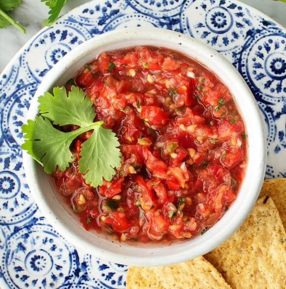

Tomato Salsa

Original Recipe Source - Love & Lemons
Ingredients
- 1/4 White Onion, Cleaned and Roughly Chopped
- 1 Garlic Clove
- 500g Roma or Other Small Tomato, Cut into Large Chunks
- 1 Jalapeño Pepper, chopped (seeds removed optionally)
- 1/4 Cup Fresh Coriander
- Juice and Zest of 1 Lime
- 1/2 tsp of Sea Salt
- 1/4 tsp Ground Cumin
- 1/4 tsp Sugar
Method
- In a food processor, combine the onion and garlic. Pulse until well chopped.
- Add the tomatoes, jalapeno, Coriander, lime juice, lime zest, salt, cumin, and sugar. Pulse until combined but still chunky.
- The consistency of this salsa varies depending on the water content of the tomatoes. If it's too watery, strain half to remove some of the liquid. Combine the chunky strained mixture with the remaining salsa. If you still prefer a chunkier texture, strain out more of the liquid to reach your desired consistency.